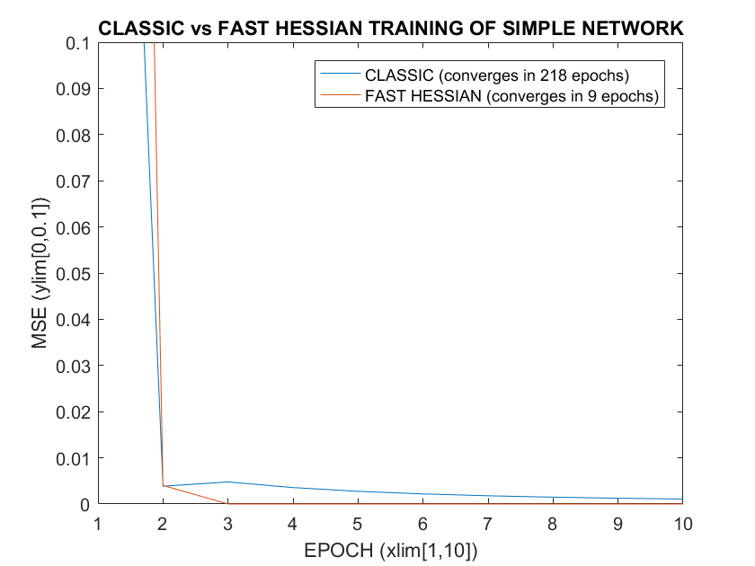

classdef ActivationFunction
enumeration
NONE, SUM, SIGMOID, TANH
end
end
classdef NodeType
enumeration
INPUT,
HIDDEN,
OUTPUT
end
end
global PATTERNS
PATTERNS = [
1 0;
1 1;
];
global TARGETS
TARGETS = [
1;
1;
];
X1 = Node(1, NodeType.INPUT);
X2 = Node(2, NodeType.INPUT);
H1 = Node('h1', NodeType.HIDDEN, ActivationFunction.TANH);
H2 = Node('h2', NodeType.HIDDEN, ActivationFunction.TANH);
H3 = Node('h3', NodeType.HIDDEN, ActivationFunction.TANH);
global O; O = Node('o1', NodeType.OUTPUT, ActivationFunction.SUM);
C1 = Connection('w1', X1, H1);
C2 = Connection('w2', X1, O);
C3 = Connection('w3', X1, H3);
C4 = Connection('w4', X2, H2);
C5 = Connection('w5', X2, H3);
C6 = Connection('w6', H1, O);
C7 = Connection('w7', H2, O);
C8 = Connection('w8', H3, O);
global CONNECTIONS; CONNECTIONS = [C1, C2, C3, C4, C5, C6, C7, C8];
global LEARN_RATE; LEARN_RATE = 1.0;
global MAX_EPOCHS; MAX_EPOCHS = 1000;
global MIN_WEIGHT_DIFF; MIN_WEIGHT_DIFF = 0.00001;
global NUM_PATTERNS; [NUM_PATTERNS,~] = size(PATTERNS);
initialWeights = [-0.25, 0.33, 0.14, -0.17, 0.16, 0.43, 0.21, -0.25];
setWeights(initialWeights);
mses1 = train('CLASSIC');
setWeights(initialWeights);
mses2 = train('FAST_HESSIAN');
figure
plot(1:length(mses1), mses1, 1:length(mses2), mses2)
title('CLASSIC vs FAST HESSIAN TRAINING OF SIMPLE NETWORK')
xlabel('EPOCH (xlim[1,10])')
ylabel('MSE (ylim[0,0.1])')
xlim([1,10])
ylim([0,0.1])
legend('CLASSIC (converges in 218 epochs)', 'FAST HESSIAN (converges in 9 epochs)')
function mses = train(MODE)
global CONNECTIONS
global LEARN_RATE;
global MAX_EPOCHS;
global MIN_WEIGHT_DIFF;
global NUM_PATTERNS;
global O;
global PATTERNS;
global TARGETS;
fprintf ('INITIAL VALUES\n--------------\n')
fprintf ('MODE: %s\n', MODE)
fprintf ('LEARN_RATE: %.4f\n', LEARN_RATE)
fprintf ('MAX_EPOCHS: %.4f', MAX_EPOCHS)
logWeights()
mses = zeros(218, 1);
for epoch = 1:MAX_EPOCHS
weightsBefore = extractWeights();
approxHessian = zeros(length(CONNECTIONS));
gradient = zeros(length(CONNECTIONS),1);
TSS = 0;
for p = 1:NUM_PATTERNS
fprintf ('\n-------------------\nepoch %1d pattern %1d\n-------------------', epoch, p)
pattern = PATTERNS(p, :);
target = TARGETS(p,:);
out = O.calculateOutput(pattern);
fprintf ('\noutput: %.4f', out)
error = target - out;
TSS = TSS + (error^2);
O.backProp(error);
jacobian = zeros(length(CONNECTIONS),1);
for i = 1:length(CONNECTIONS)
connection = CONNECTIONS(i);
if strcmp(MODE, 'CLASSIC') == 1
connection.increment(connection.errorDerivative);
else
jacobian(i) = jacobian(i) + connection.outputDerivative;
gradient(i) = gradient(i) + connection.errorDerivative;
end
end
if strcmp(MODE,'FAST_HESSIAN') == 1
approxHessian = approxHessian + (jacobian * jacobian');
fprintf ('\njacobian now: %s', mat2str(jacobian))
fprintf ('\ngradient now: %s', mat2str(gradient))
fprintf ('\napproxHessian now: %s', mat2str(approxHessian))
end
end
MSE = TSS / NUM_PATTERNS;
mses(epoch) = MSE;
fprintf ('\nMSE: %.4f', MSE)
if strcmp(MODE,'FAST_HESSIAN') == 1
fprintf ('\ndoing Newtons step')
gradient = gradient ./ NUM_PATTERNS;
approxHessian = approxHessian ./ NUM_PATTERNS;
fprintf ('\ngradient: %s', mat2str(gradient))
fprintf ('\napproxHessian: %s', mat2str(approxHessian))
regularisedHessian = approxHessian + (eye(length(CONNECTIONS)) * 0.001);
fprintf ('\nregularisedHessian: %s', mat2str(regularisedHessian))
newtons = regularisedHessian\gradient;
fprintf ('\nnewtons: %s', mat2str(newtons))
for i = 1:length(CONNECTIONS)
connection = CONNECTIONS(i);
connection.increment(newtons(i));
end
end
logWeights()
weightsAfter = extractWeights();
if not(weightsChanged(weightsBefore, weightsAfter, MIN_WEIGHT_DIFF))
fprintf ('\nBreaking from loop as weights have not changed this epoch')
break
end
end
fprintf ('\n\n')
end
function logWeights()
global CONNECTIONS
fprintf ('\nconnections: ')
for i=1:length(CONNECTIONS)
fprintf('%s=%.4f ', CONNECTIONS(i).id, CONNECTIONS(i).weight)
end
end
function weights = extractWeights()
global CONNECTIONS
weights=zeros(length(CONNECTIONS));
for i=1:length(CONNECTIONS)
weights(i) = CONNECTIONS(i).weight;
end
end
function changed = weightsChanged(before, after, minDiff)
changed = false;
diff = before - after;
for i=1:length(diff)
if abs(diff(i)) > minDiff
changed = true;
break;
end
end
end
function setWeights(weights)
global CONNECTIONS
numConnections = size(CONNECTIONS, 2);
for i = 1:numConnections
CONNECTIONS(i).reset(weights(i));
end
end
classdef Node < handle
properties (SetAccess='immutable')
id
type
activation
end
properties (GetAccess='public', SetAccess='private')
sum
output
activationDerivative
inboundConnections
end
methods
function obj = Node(id, type, activation)
obj.id = id;
obj.type = type;
obj.sum = 0;
obj.output = 0;
obj.activationDerivative = 0;
obj.inboundConnections = [];
if exist('activation','var')
obj.activation = activation;
else
obj.activation = ActivationFunction.NONE;
end
end
function r = addInput(obj, amount)
obj.sum = obj.sum + amount;
switch obj.activation
case ActivationFunction.SIGMOID
obj.output = 1 / (1 + exp(-obj.sum));
obj.activationDerivative = obj.output * (1 - obj.output);
case ActivationFunction.TANH
obj.output = tanh(obj.sum);
obj.activationDerivative = 1 - (obj.output ^ 2);
case ActivationFunction.SUM
obj.output = obj.sum;
obj.activationDerivative = 1;
end
r = obj.output;
end
function registerInboundConnection(obj, connection)
obj.inboundConnections = [obj.inboundConnections, connection];
end
function obj = reset(obj)
obj.sum = 0;
obj.output = 0;
obj.activationDerivative = 0;
end
function r = calculateOutput(obj, pattern)
obj.reset;
switch obj.type
case NodeType.INPUT
obj.output = pattern(obj.id);
case {NodeType.HIDDEN, NodeType.OUTPUT}
for input = obj.inboundConnections
out = input.from.calculateOutput(pattern);
obj.addInput(out * input.weight);
end
end
r = obj.output;
end
function backProp(obj, dEkdOk, dOkdSk)
if not(exist('dOkdSk','var'))
dOkdSk = 1;
end
for connection = obj.inboundConnections
dSkdOj = connection.weight;
dOjdSj = obj.activationDerivative;
dSjdWij = connection.from.output;
dOkdWij = dOkdSk * dOjdSj * dSjdWij;
connection.setOutputDerivative(dOkdWij);
connection.setErrorDerivative(dEkdOk * dOkdWij);
connection.from.backProp(dEkdOk, dSkdOj * dOjdSj);
end
end
end
end
classdef Connection < handle
properties (SetAccess='immutable')
id
from
to
end
properties (GetAccess='public', SetAccess='private')
weight
errorDerivative
outputDerivative
end
methods
function obj = Connection(id, from, to)
obj.id = id;
obj.from = from;
obj.to = to;
to.registerInboundConnection(obj);
end
function increment(obj, delta)
obj.weight = obj.weight + delta;
end
function reset(obj, weight)
obj.weight = weight;
end
function setErrorDerivative(obj, errorDerivative)
obj.errorDerivative = errorDerivative;
end
function setOutputDerivative(obj, outputDerivative)
obj.outputDerivative = outputDerivative;
end
end
end
INITIAL VALUES
--------------
MODE: CLASSIC
LEARN_RATE: 1.0000
MAX_EPOCHS: 1000.0000
connections: w1=-0.2500 w2=0.3300 w3=0.1400 w4=-0.1700 w5=0.1600 w6=0.4300 w7=0.2100 w8=-0.2500
-------------------
epoch 1 pattern 1
-------------------
output: 0.1899
-------------------
epoch 1 pattern 2
-------------------
output: 1.1088
MSE: 0.3340
connections: w1=0.0524 w2=1.0313 w3=-0.0438 w4=-0.1922 w5=0.1748 w6=0.2232 w7=0.2283 w8=-0.1483
-------------------
epoch 2 pattern 1
-------------------
output: 1.0495
-------------------
epoch 2 pattern 2
-------------------
output: 0.9275
MSE: 0.0039
connections: w1=0.0573 w2=1.0543 w3=-0.0469 w4=-0.1762 w5=0.1644 w6=0.2236 w7=0.2145 w8=-0.1362
[... truncated ...]
-------------------
epoch 218 pattern 1
-------------------
output: 1.0001
-------------------
epoch 218 pattern 2
-------------------
output: 0.9999
MSE: 0.0000
connections: w1=0.0422 w2=0.9912 w3=-0.0397 w4=-0.0048 w5=0.0984 w6=0.2141 w7=0.1195 w8=0.0051
Breaking from loop as weights have not changed this epoch
INITIAL VALUES
--------------
MODE: FAST_HESSIAN
LEARN_RATE: 1.0000
MAX_EPOCHS: 1000.0000
connections: w1=-0.2500 w2=0.3300 w3=0.1400 w4=-0.1700 w5=0.1600 w6=0.4300 w7=0.2100 w8=-0.2500
-------------------
epoch 1 pattern 1
-------------------
output: 0.1899
jacobian now: [0.404206384986743;1;-0.245163322735795;0;0;-0.244918662403709;0;0.139092447878458]
gradient now: [0.327442797297871;0.810088136803209;-0.198603899327524;0;0;-0.198405702894955;0;0.112677141945258]
approxHessian now: [0.163382801664051 0.404206384986743 -0.0990965804143736 0 0 -0.0989976871459917 0 0.0562220555359084;0.404206384986743 1 -0.245163322735795 0 0 -0.244918662403709 0 0.139092447878458;-0.0990965804143736 -0.245163322735795 0.0601050548148554 0 0 0.0600450730748997 0 -0.0341003666893381;0 0 0 0 0 0 0 0;0 0 0 0 0 0 0 0;-0.0989976871459917 -0.244918662403709 0.0600450730748997 0 0 0.059985151193622 0 -0.0340663362848496;0 0 0 0 0 0 0 0;0.0562220555359084 0.139092447878458 -0.0341003666893381 0 0 -0.0340663362848496 0 0.0193467090568216]
-------------------
epoch 1 pattern 2
-------------------
output: 0.1165
jacobian now: [0.404206384986743;1;-0.228784240456657;0.204046042912205;-0.228784240456657;-0.244918662403709;-0.168381045870815;0.291312612451591]
gradient now: [0.684560430915653;1.69359133438257;-0.400735507326747;0.180275331366349;-0.202131607999223;-0.414792124275493;-0.148765192438622;0.370052766541436]
approxHessian now: [0.326765603328101 0.808412769973485 -0.191572631191297 0.082476713376392 -0.0924760507769231 -0.197995374291983 -0.0680606938517289 0.17397247351601;0.808412769973485 2 -0.473947563192452 0.204046042912205 -0.228784240456657 -0.489837324807418 -0.168381045870815 0.430405060330049;-0.191572631191297 -0.473947563192452 0.112447283496185 -0.0466825189458552 0.0523422286813296 0.116078603226593 0.0385229296868519 -0.10074810146452;0.082476713376392 0.204046042912205 -0.0466825189458552 0.0416347876281292 -0.0466825189458552 -0.049974683898827 -0.0343574861113582 0.0594411858211638;-0.0924760507769231 -0.228784240456657 0.0523422286813296 -0.0466825189458552 0.0523422286813296 0.0560335301516931 0.0385229296868519 -0.0666477347751818;-0.197995374291983 -0.489837324807418 0.116078603226593 -0.049974683898827 0.0560335301516931 0.119970302387244 0.0412396605288175 -0.105414231667823;-0.0680606938517289 -0.168381045870815 0.0385229296868519 -0.0343574861113582 0.0385229296868519 0.0412396605288175 0.0283521766085494 -0.0490515223599582;0.17397247351601 0.430405060330049 -0.10074810146452 0.0594411858211638 -0.0666477347751818 -0.105414231667823 -0.0490515223599582 0.104209747230192]
MSE: 0.7184
doing Newtons step
gradient: [0.342280215457827;0.846795667191287;-0.200367753663373;0.0901376656831744;-0.101065803999611;-0.207396062137746;-0.0743825962193111;0.185026383270718]
approxHessian: [0.163382801664051 0.404206384986743 -0.0957863155956483 0.041238356688196 -0.0462380253884616 -0.0989976871459917 -0.0340303469258644 0.086986236758005;0.404206384986743 1 -0.236973781596226 0.102023021456102 -0.114392120228329 -0.244918662403709 -0.0841905229354074 0.215202530165024;-0.0957863155956483 -0.236973781596226 0.0562236417480925 -0.0233412594729276 0.0261711143406648 0.0580393016132964 0.019261464843426 -0.05037405073226;0.041238356688196 0.102023021456102 -0.0233412594729276 0.0208173938140646 -0.0233412594729276 -0.0249873419494135 -0.0171787430556791 0.0297205929105819;-0.0462380253884616 -0.114392120228329 0.0261711143406648 -0.0233412594729276 0.0261711143406648 0.0280167650758465 0.019261464843426 -0.0333238673875909;-0.0989976871459917 -0.244918662403709 0.0580393016132964 -0.0249873419494135 0.0280167650758465 0.059985151193622 0.0206198302644088 -0.0527071158339117;-0.0340303469258644 -0.0841905229354074 0.019261464843426 -0.0171787430556791 0.019261464843426 0.0206198302644088 0.0141760883042747 -0.0245257611799791;0.086986236758005 0.215202530165024 -0.05037405073226 0.0297205929105819 -0.0333238673875909 -0.0527071158339117 -0.0245257611799791 0.0521048736150962]
regularisedHessian: [0.164382801664051 0.404206384986743 -0.0957863155956483 0.041238356688196 -0.0462380253884616 -0.0989976871459917 -0.0340303469258644 0.086986236758005;0.404206384986743 1.001 -0.236973781596226 0.102023021456102 -0.114392120228329 -0.244918662403709 -0.0841905229354074 0.215202530165024;-0.0957863155956483 -0.236973781596226 0.0572236417480925 -0.0233412594729276 0.0261711143406648 0.0580393016132964 0.019261464843426 -0.05037405073226;0.041238356688196 0.102023021456102 -0.0233412594729276 0.0218173938140646 -0.0233412594729276 -0.0249873419494135 -0.0171787430556791 0.0297205929105819;-0.0462380253884616 -0.114392120228329 0.0261711143406648 -0.0233412594729276 0.0271711143406648 0.0280167650758465 0.019261464843426 -0.0333238673875909;-0.0989976871459917 -0.244918662403709 0.0580393016132964 -0.0249873419494135 0.0280167650758465 0.060985151193622 0.0206198302644088 -0.0527071158339117;-0.0340303469258644 -0.0841905229354074 0.019261464843426 -0.0171787430556791 0.019261464843426 0.0206198302644088 0.0151760883042747 -0.0245257611799791;0.086986236758005 0.215202530165024 -0.05037405073226 0.0297205929105819 -0.0333238673875909 -0.0527071158339117 -0.0245257611799791 0.0531048736150962]
newtons: [0.248939720969414;0.615872807099664;-0.143981439835843;0.0873035110530581;-0.0978880412499248;-0.150838744125662;-0.0720438205490346;0.150792452803774]
connections: w1=-0.0011 w2=0.9459 w3=-0.0040 w4=-0.0827 w5=0.0621 w6=0.2792 w7=0.1380 w8=-0.0992
-------------------
epoch 2 pattern 1
-------------------
output: 0.9460
jacobian now: [0.279160942043828;1;-0.0992059745883823;0;0;-0.00106027863326769;0;-0.00398141879822969]
gradient now: [0.015082561763393;0.0540281948218426;-0.00535991972255189;0;0;-5.72849405636239e-05;0;-0.0002151088704981]
approxHessian now: [0.0779308315627974 0.279160942043828 -0.0276944333224688 0 0 -0.000295988382091951 0 -0.0011114566223848;0.279160942043828 1 -0.0992059745883823 0 0 -0.00106027863326769 0 -0.00398141879822969;-0.0276944333224688 -0.0992059745883823 0.00984182539403075 0 0 0.000105185975148559 0 0.000394980532122882;0 0 0 0 0 0 0 0;0 0 0 0 0 0 0 0;-0.000295988382091951 -0.00106027863326769 0.000105185975148559 0 0 1.124190780164e-06 0 4.22141328185327e-06;0 0 0 0 0 0 0 0;-0.0011114566223848 -0.00398141879822969 0.000394980532122882 0 0 4.22141328185327e-06 0 1.58516956468967e-05]
-------------------
epoch 2 pattern 2
-------------------
output: 0.9284
jacobian now: [0.279160942043828;1;-0.0988730630667213;0.13701702192095;-0.0988730630667213;-0.00106027863326769;-0.0825084907805461;0.0580651299089596]
gradient now: [0.0350610598725346;0.125594431713266;-0.0124358927761655;0.00980579264895207;-0.00707597305361362;-0.000133165092402974;-0.00590482219675438;0.00394039397169777]
approxHessian now: [0.155861663125595 0.558321884087656 -0.0552959307509336 0.0382498009154923 -0.0276014974284647 -0.000591976764183902 -0.0230331480129117 0.0150980597428976;0.558321884087656 2 -0.198079037655104 0.13701702192095 -0.0988730630667213 -0.00212055726653538 -0.0825084907805461 0.0540837111107299;-0.0552959307509336 -0.198079037655104 0.0196177079942266 -0.0135472926496044 0.00977588260019584 0.000210018971323933 0.00815786721248492 -0.00534609671934304;0.0382498009154923 0.13701702192095 -0.0135472926496044 0.0187736642960861 -0.0135472926496044 -0.000145276220736754 -0.0113050676899426 0.00795591117757874;-0.0276014974284647 -0.0988730630667213 0.00977588260019584 -0.0135472926496044 0.00977588260019584 0.000104832996175373 0.00815786721248492 -0.00574107725146592;-0.000591976764183902 -0.00212055726653538 0.000210018971323933 -0.000145276220736754 0.000104832996175373 2.24838156032801e-06 8.74819898377773e-05 -5.73438032985293e-05;-0.0230331480129117 -0.0825084907805461 0.00815786721248492 -0.0113050676899426 0.00815786721248492 8.74819898377773e-05 0.00680765105088346 -0.0047908662357646;0.0150980597428976 0.0540837111107299 -0.00534609671934304 0.00795591117757874 -0.00574107725146592 -5.73438032985293e-05 -0.0047908662357646 0.00338741100699125]
MSE: 0.0040
doing Newtons step
gradient: [0.0175305299362673;0.062797215856633;-0.00621794638808275;0.00490289632447604;-0.00353798652680681;-6.6582546201487e-05;-0.00295241109837719;0.00197019698584889]
approxHessian: [0.0779308315627974 0.279160942043828 -0.0276479653754668 0.0191249004577461 -0.0138007487142324 -0.000295988382091951 -0.0115165740064559 0.0075490298714488;0.279160942043828 1 -0.0990395188275518 0.0685085109604751 -0.0494365315333606 -0.00106027863326769 -0.041254245390273 0.027041855555365;-0.0276479653754668 -0.0990395188275518 0.00980885399711329 -0.00677364632480222 0.00488794130009792 0.000105009485661966 0.00407893360624246 -0.00267304835967152;0.0191249004577461 0.0685085109604751 -0.00677364632480222 0.00938683214804307 -0.00677364632480222 -7.26381103683772e-05 -0.0056525338449713 0.00397795558878937;-0.0138007487142324 -0.0494365315333606 0.00488794130009792 -0.00677364632480222 0.00488794130009792 5.24164980876867e-05 0.00407893360624246 -0.00287053862573296;-0.000295988382091951 -0.00106027863326769 0.000105009485661966 -7.26381103683772e-05 5.24164980876867e-05 1.124190780164e-06 4.37409949188887e-05 -2.86719016492647e-05;-0.0115165740064559 -0.041254245390273 0.00407893360624246 -0.0056525338449713 0.00407893360624246 4.37409949188887e-05 0.00340382552544173 -0.0023954331178823;0.0075490298714488 0.027041855555365 -0.00267304835967152 0.00397795558878937 -0.00287053862573296 -2.86719016492647e-05 -0.0023954331178823 0.00169370550349563]
regularisedHessian: [0.0789308315627974 0.279160942043828 -0.0276479653754668 0.0191249004577461 -0.0138007487142324 -0.000295988382091951 -0.0115165740064559 0.0075490298714488;0.279160942043828 1.001 -0.0990395188275518 0.0685085109604751 -0.0494365315333606 -0.00106027863326769 -0.041254245390273 0.027041855555365;-0.0276479653754668 -0.0990395188275518 0.0108088539971133 -0.00677364632480222 0.00488794130009792 0.000105009485661966 0.00407893360624246 -0.00267304835967152;0.0191249004577461 0.0685085109604751 -0.00677364632480222 0.0103868321480431 -0.00677364632480222 -7.26381103683772e-05 -0.0056525338449713 0.00397795558878937;-0.0138007487142324 -0.0494365315333606 0.00488794130009792 -0.00677364632480222 0.00588794130009792 5.24164980876867e-05 0.00407893360624246 -0.00287053862573296;-0.000295988382091951 -0.00106027863326769 0.000105009485661966 -7.26381103683772e-05 5.24164980876867e-05 0.00100112419078016 4.37409949188887e-05 -2.86719016492647e-05;-0.0115165740064559 -0.041254245390273 0.00407893360624246 -0.0056525338449713 0.00407893360624246 4.37409949188887e-05 0.00440382552544173 -0.0023954331178823;0.0075490298714488 0.027041855555365 -0.00267304835967152 0.00397795558878937 -0.00287053862573296 -2.86719016492647e-05 -0.0023954331178823 0.00269370550349562]
newtons: [0.0140785123285345;0.0504315260776128;-0.00486709171918993;0.0559807626837979;-0.0403963639098192;-5.34714695431712e-05;-0.0337103242869257;0.0251494416959669]
connections: w1=0.0130 w2=0.9963 w3=-0.0088 w4=-0.0267 w5=0.0217 w6=0.2791 w7=0.1042 w8=-0.0741
[... truncated ...]
output: 1.0000
jacobian now: [0.279054934133091;1;-0.0692254341278366;0.0985039532890733;-0.0692254341278366;0.0128760524876041;0.00128271325308323;-0.0069543530742621]
gradient now: [-2.0599676644786e-09;-7.38194316785012e-09;5.08769219352751e-10;1.08569539165501e-07;-7.6299206588541e-08;-9.50502876897489e-11;1.4137867782833e-09;2.11190485273523e-09]
approxHessian now: [0.155743312528048 0.558109868266182 -0.0386348323000924 0.0274880141969314 -0.0193176989608781 0.0071862519576452 0.000357947462350784 -0.00439952403681887;0.558109868266182 2 -0.138448841336975 0.0985039532890733 -0.0692254341278366 0.0257521049752083 0.00128271325308323 -0.015765799126564;-0.0386348323000924 -0.138448841336975 0.00958404083582965 -0.00681897892974424 0.00479216073018745 -0.00178267454790287 -8.87963818062161e-05 0.0010913764288239;0.0274880141969314 0.0985039532890733 -0.00681897892974424 0.00970302881357593 -0.00681897892974424 0.00126834207278661 0.000126352326364986 -0.000685031270382837;-0.0193176989608781 -0.0692254341278366 0.00479216073018745 -0.00681897892974424 0.00479216073018745 -0.000891350323307207 -8.87963818062161e-05 0.000481418110644049;0.0071862519576452 0.0257521049752083 -0.00178267454790287 0.00126834207278661 -0.000891350323307207 0.000331585455327074 1.65162831732451e-05 -0.000203001257062662;0.000357947462350784 0.00128271325308323 -8.87963818062161e-05 0.000126352326364986 -8.87963818062161e-05 1.65162831732451e-05 1.64535328963536e-06 -8.92044085497609e-06;-0.00439952403681887 -0.015765799126564 0.0010913764288239 -0.000685031270382837 0.000481418110644049 -0.000203001257062662 -8.92044085497609e-06 0.000126004608214126]
MSE: 0.0000
doing Newtons step
gradient: [-1.0299838322393e-09;-3.69097158392506e-09;2.54384609676376e-10;5.42847695827507e-08;-3.81496032942705e-08;-4.75251438448745e-11;7.06893389141649e-10;1.05595242636761e-09]
approxHessian: [0.0778716562640238 0.279054934133091 -0.0193174161500462 0.0137440070984657 -0.00965884948043904 0.0035931259788226 0.000178973731175392 -0.00219976201840943;0.279054934133091 1 -0.0692244206684876 0.0492519766445366 -0.0346127170639183 0.0128760524876041 0.000641356626541615 -0.00788289956328201;-0.0193174161500462 -0.0692244206684876 0.00479202041791483 -0.00340948946487212 0.00239608036509372 -0.000891337273951435 -4.43981909031081e-05 0.00054568821441195;0.0137440070984657 0.0492519766445366 -0.00340948946487212 0.00485151440678797 -0.00340948946487212 0.000634171036393307 6.31761631824928e-05 -0.000342515635191419;-0.00965884948043904 -0.0346127170639183 0.00239608036509372 -0.00340948946487212 0.00239608036509372 -0.000445675161653604 -4.43981909031081e-05 0.000240709055322024;0.0035931259788226 0.0128760524876041 -0.000891337273951435 0.000634171036393307 -0.000445675161653604 0.000165792727663537 8.25814158662256e-06 -0.000101500628531331;0.000178973731175392 0.000641356626541615 -4.43981909031081e-05 6.31761631824928e-05 -4.43981909031081e-05 8.25814158662256e-06 8.2267664481768e-07 -4.46022042748805e-06;-0.00219976201840943 -0.00788289956328201 0.00054568821441195 -0.000342515635191419 0.000240709055322024 -0.000101500628531331 -4.46022042748805e-06 6.30023041070629e-05]
regularisedHessian: [0.0788716562640238 0.279054934133091 -0.0193174161500462 0.0137440070984657 -0.00965884948043904 0.0035931259788226 0.000178973731175392 -0.00219976201840943;0.279054934133091 1.001 -0.0692244206684876 0.0492519766445366 -0.0346127170639183 0.0128760524876041 0.000641356626541615 -0.00788289956328201;-0.0193174161500462 -0.0692244206684876 0.00579202041791483 -0.00340948946487212 0.00239608036509372 -0.000891337273951435 -4.43981909031081e-05 0.00054568821441195;0.0137440070984657 0.0492519766445366 -0.00340948946487212 0.00585151440678797 -0.00340948946487212 0.000634171036393307 6.31761631824928e-05 -0.000342515635191419;-0.00965884948043904 -0.0346127170639183 0.00239608036509372 -0.00340948946487212 0.00339608036509372 -0.000445675161653604 -4.43981909031081e-05 0.000240709055322024;0.0035931259788226 0.0128760524876041 -0.000891337273951435 0.000634171036393307 -0.000445675161653604 0.00116579272766354 8.25814158662256e-06 -0.000101500628531331;0.000178973731175392 0.000641356626541615 -4.43981909031081e-05 6.31761631824928e-05 -4.43981909031081e-05 8.25814158662256e-06 0.00100082267664482 -4.46022042748805e-06;-0.00219976201840943 -0.00788289956328201 0.00054568821441195 -0.000342515635191419 0.000240709055322024 -0.000101500628531331 -4.46022042748805e-06 0.00106300230410706]
newtons: [-2.23442722519482e-07;-8.00712315708303e-07;5.51858888111447e-08;1.17677764434078e-05;-8.27001765729738e-06;-1.03100138045297e-08;1.53239360444574e-07;2.28913077361045e-07]
connections: w1=0.0129 w2=0.9958 w3=-0.0088 w4=0.0013 w5=0.0018 w6=0.2791 w7=0.0985 w8=-0.0692
-------------------
epoch 9 pattern 1
-------------------
output: 1.0000
jacobian now: [0.279054925430488;1;-0.0692231783811561;0;0;0.0128758290819262;0;-0.0088113908706978]
gradient now: [-6.71214923129017e-08;-2.40531473183481e-07;1.66503530744623e-08;0;0;-3.0970421375344e-09;0;2.11941682692441e-09]
approxHessian now: [0.0778716514070154 0.279054925430488 -0.0193170688812149 0 0 0.00359306352431262 0 -0.00245886202236146;0.279054925430488 1 -0.0692231783811561 0 0 0.0128758290819262 0 -0.0088113908706978;-0.0193170688812149 -0.0692231783811561 0.00479184842518935 0 0 -0.000891305813343452 0 0.000609952482028404;0 0 0 0 0 0 0 0;0 0 0 0 0 0 0 0;0.00359306352431262 0.0128758290819262 -0.000891305813343452 0 0 0.000165786974546975 0 -0.000113453962825149;0 0 0 0 0 0 0 0;-0.00245886202236146 -0.0088113908706978 0.000609952482028404 0 0 -0.000113453962825149 0 7.76406090762166e-05]
-------------------
epoch 9 pattern 2
-------------------
output: 1.0000
jacobian now: [0.279054925430488;1;-0.0692251973116479;0.0985041035407643;-0.0692251973116479;0.0128758290819262;0.00129448100998631;-0.00696256750826699]
gradient now: [-4.46854705482787e-10;-1.60131452542345e-09;1.10365697654991e-10;2.35356010874645e-08;-1.65399873768074e-08;-2.06182521357582e-11;3.09290553095872e-10;4.55849467506749e-10]
approxHessian now: [0.155743302814031 0.558109850860977 -0.0386347011549277 0.0274880552681651 -0.0193176322737128 0.00718612704862524 0.000361231301712914 -0.00440180077918565;0.558109850860977 2 -0.138448375692804 0.0985041035407643 -0.0692251973116479 0.0257516581638523 0.00129448100998631 -0.0157739583789648;-0.0386347011549277 -0.138448375692804 0.00958397636802594 -0.0068189660036164 0.00479212794283658 -0.00178263762209084 -8.96107033324838e-05 0.00109193759158386;0.0274880552681651 0.0985041035407643 -0.0068189660036164 0.00970305841436961 -0.0068189660036164 0.00126832200105924 0.000127511691439245 -0.000685841470743893;-0.0193176322737128 -0.0692251973116479 0.00479212794283658 -0.0068189660036164 0.00479212794283658 -0.000891331808747393 -8.96107033324838e-05 0.000481985109555451;0.00718612704862524 0.0257516581638523 -0.00178263762209084 0.00126832200105924 -0.000891331808747393 0.000331573949093951 1.66675162343829e-05 -0.000203102792032968;0.000361231301712914 0.00129448100998631 -8.96107033324838e-05 0.000127511691439245 -8.96107033324838e-05 1.66675162343829e-05 1.67568108521519e-06 -9.01291142019934e-06;-0.00440180077918565 -0.0157739583789648 0.00109193759158386 -0.000685841470743893 0.000481985109555451 -0.000203102792032968 -9.01291142019934e-06 0.000126117955383392]
MSE: 0.0000
doing Newtons step
gradient: [-2.23427352741394e-10;-8.00657262711724e-10;5.51828488274954e-11;1.17678005437323e-08;-8.26999368840368e-09;-1.03091260678791e-11;1.54645276547936e-10;2.27924733753374e-10]
approxHessian: [0.0778716514070154 0.279054925430488 -0.0193173505774638 0.0137440276340825 -0.00965881613685638 0.00359306352431262 0.000180615650856457 -0.00220090038959282;0.279054925430488 1 -0.069224187846402 0.0492520517703821 -0.034612598655824 0.0128758290819262 0.000647240504993157 -0.0078869791894824;-0.0193173505774638 -0.069224187846402 0.00479198818401297 -0.0034094830018082 0.00239606397141829 -0.000891318811045422 -4.48053516662419e-05 0.000545968795791928;0.0137440276340825 0.0492520517703821 -0.0034094830018082 0.00485152920718481 -0.0034094830018082 0.000634161000529619 6.37558457196225e-05 -0.000342920735371946;-0.00965881613685638 -0.034612598655824 0.00239606397141829 -0.0034094830018082 0.00239606397141829 -0.000445665904373696 -4.48053516662419e-05 0.000240992554777726;0.00359306352431262 0.0128758290819262 -0.000891318811045422 0.000634161000529619 -0.000445665904373696 0.000165786974546975 8.33375811719146e-06 -0.000101551396016484;0.000180615650856457 0.000647240504993157 -4.48053516662419e-05 6.37558457196225e-05 -4.48053516662419e-05 8.33375811719146e-06 8.37840542607593e-07 -4.50645571009967e-06;-0.00220090038959282 -0.0078869791894824 0.000545968795791928 -0.000342920735371946 0.000240992554777726 -0.000101551396016484 -4.50645571009967e-06 6.30589776916959e-05]
regularisedHessian: [0.0788716514070154 0.279054925430488 -0.0193173505774638 0.0137440276340825 -0.00965881613685638 0.00359306352431262 0.000180615650856457 -0.00220090038959282;0.279054925430488 1.001 -0.069224187846402 0.0492520517703821 -0.034612598655824 0.0128758290819262 0.000647240504993157 -0.0078869791894824;-0.0193173505774638 -0.069224187846402 0.00579198818401297 -0.0034094830018082 0.00239606397141829 -0.000891318811045422 -4.48053516662419e-05 0.000545968795791928;0.0137440276340825 0.0492520517703821 -0.0034094830018082 0.00585152920718481 -0.0034094830018082 0.000634161000529619 6.37558457196225e-05 -0.000342920735371946;-0.00965881613685638 -0.034612598655824 0.00239606397141829 -0.0034094830018082 0.00339606397141829 -0.000445665904373696 -4.48053516662419e-05 0.000240992554777726;0.00359306352431262 0.0128758290819262 -0.000891318811045422 0.000634161000529619 -0.000445665904373696 0.00116578697454698 8.33375811719146e-06 -0.000101551396016484;0.000180615650856457 0.000647240504993157 -4.48053516662419e-05 6.37558457196225e-05 -4.48053516662419e-05 8.33375811719146e-06 0.00100083784054261 -4.50645571009967e-06;-0.00220090038959282 -0.0078869791894824 0.000545968795791928 -0.000342920735371946 0.000240992554777726 -0.000101551396016484 -4.50645571009967e-06 0.0010630589776917]
newtons: [-4.84383507080815e-08;-1.73579988360241e-07;1.19634731729841e-08;2.55101354708352e-06;-1.79276202507099e-06;-2.2349862621691e-09;3.35238682878918e-08;4.94094503259922e-08]
connections: w1=0.0129 w2=0.9958 w3=-0.0088 w4=0.0013 w5=0.0018 w6=0.2791 w7=0.0985 w8=-0.0692
Breaking from loop as weights have not changed this epoch
